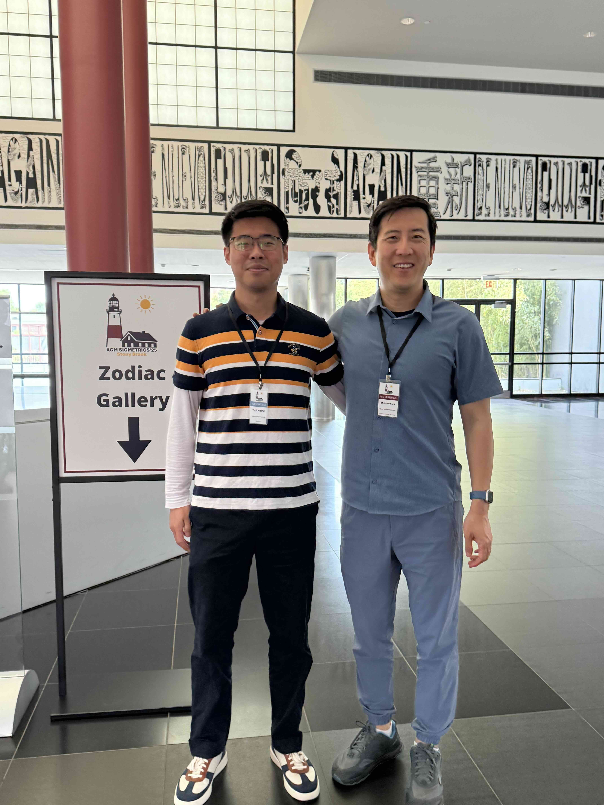
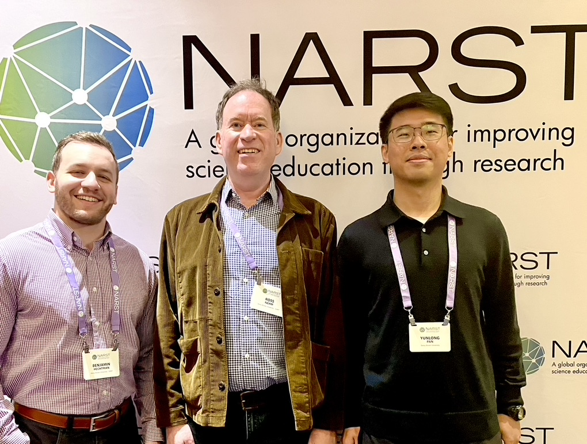
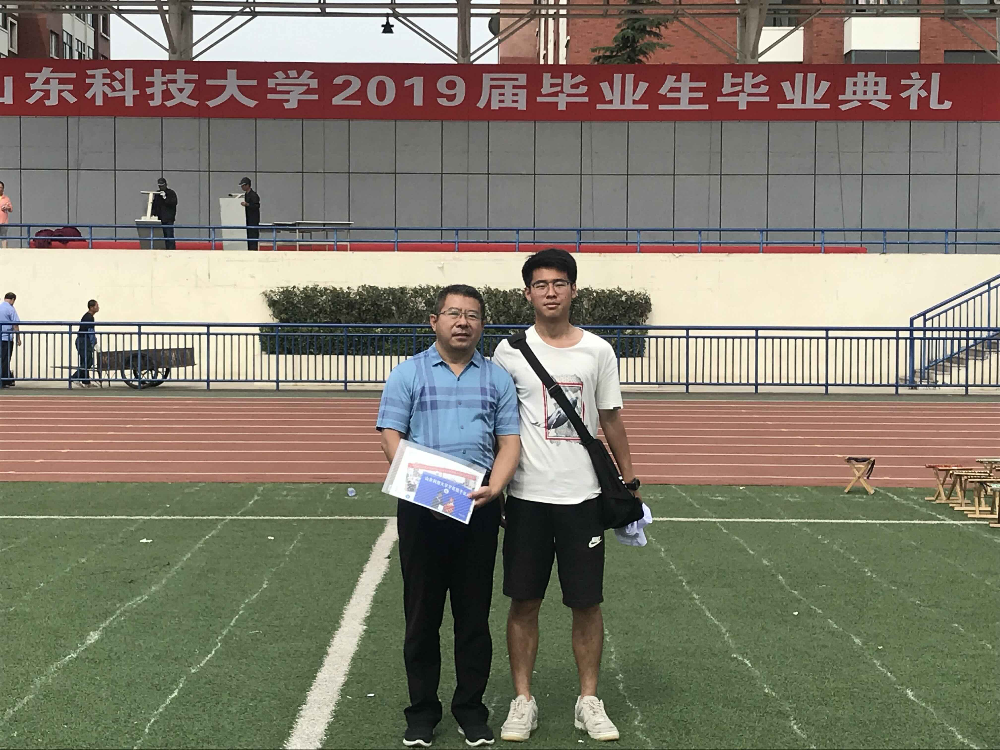

Selected Research
- Pan Y, Urban N, Lin W, Zhu W, Jantre S. Hybrid Machine Learning–Physics Modeling for E3SM Uncertainty Quantification. In progress.
- Pan Y, Park T, Lin W, Zhu W. NeuralCora: a framework for Deep Learning research on Coastal Ocean Reanalysis.
- Pan Y, Wang W, Liu Y, Zhang M, Zhu W, Lin W, Liu Z (2025). LLMs Performance Evaluation: A Case Study in Climate Change Statements. SIGMETRICS Perform. Eval. Rev., 53(2), 79–81 (September 2025). doi:10.1145/3764944.3764960.
- Pan Y, Nehm RH (2025). Large Language Model and Traditional Machine Learning Scoring of Evolutionary Explanations: Benefits and Drawbacks. Education Sciences, 15(6), 676. doi:10.3390/educsci15060676.
Experience
- Research Assistant · Computing and Data Sciences (CDS), Brookhaven National Laboratory · 2026 – Present
- Research Assistant, Stony Brook University · 2024 – 2026
- Teaching Assistant, Stony Brook University · 2022 – 2024
Research & Technical Skills
Statistical Modeling & Analysis
Uncertainty quantification · Bayesian inference · Computational statistics · Surrogate & reduced-order modeling · Gaussian process emulation · MCMC estimation
Climate & Scientific Computing
Earth system modeling · Atmospheric data analysis · Simulation diagnostics · Numerical stability testing · E3SM · scmlib · MAGICC
Machine Learning
Spatiotemporal forecasting · CNNs, ResNets & U-Nets · Model training & validation · Forecast evaluation · LLM fine-tuning · DreamBooth & LoRA fine-tuning · NVFP4 quantization · Speculative decoding · Multimodal inference · JAX optimization · Single-cell RNA-seq analysis · Portfolio optimization
PyTorch · scikit-learn · TensorRT · TensorRT-LLM · JAX · LLaMA Factory · NVIDIA NeMo · Unsloth · NVIDIA Model Optimizer · cuOpt
AI
Local LLM deployment & serving · RAG application deployment · Text-to-knowledge-graph workflows · Video search & summarization · Real-time VLM interaction · Local agent deployment · Multi-agent chatbots · Sandboxed agent execution · AI-assisted coding
Ollama · llama.cpp · LM Studio · vLLM · SGLang · NVIDIA NIM · OpenClaw · Hermes Agent · NemoClaw · NVIDIA OpenShell · NVIDIA AI Workbench · NVIDIA VSS Blueprint · Live VLM WebUI · Continue · Telegram
Research Software & Computing
Version control · Reproducible workflows · Containerization · HPC workflows · Multi-node connectivity & NCCL setup · Remote access configuration · GPU kernel benchmarking · Robotics simulation setup
Git / GitHub · Linux · Docker · Conda · Jupyter · NERSC Perlmutter · CUDA · cuTile · NCCL · Tailscale · Isaac Sim · Isaac Lab
Programming, Data Analysis & Visualization
Scientific data processing · Multidimensional data analysis · Time-series visualization · Interactive charts · Research figures · GPU-accelerated data science
Python · SQL · NumPy · pandas · SciPy · xarray · Matplotlib · Plotly · RAPIDS · cuDF · cuML
Cloud & Automation
AWS · Azure · Google Cloud · n8n
Education
- PhD in Applied Mathematics & Statistics (in progress), Stony Brook University · 2022 – Present
- MS in Applied Mathematics & Statistics, Stony Brook University · 2020 – 2022
- BS in Applied Mathematics, Shandong University of Science and Technology · 2015 – 2019
Memories



Contact
Let’s connect
Interested in scientific machine learning, climate modeling, or research collaboration? Feel free to reach out.
- Location: Brookhaven, New York
- Email: yunlong.pan@stonybrook.edu
- GitHub: github.com/yl1127